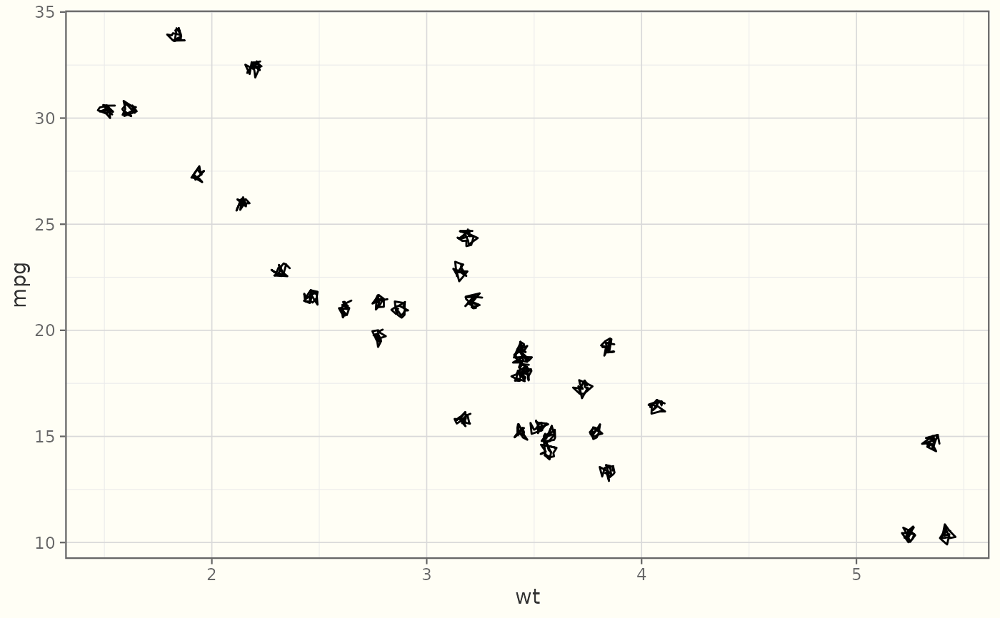
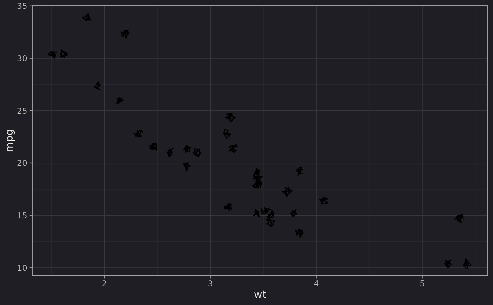
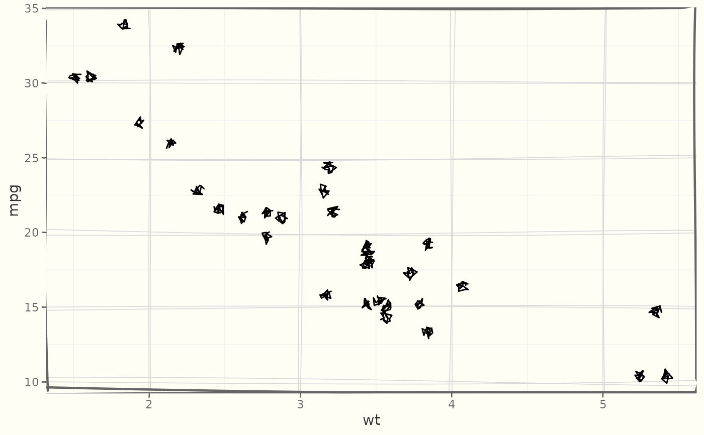

A sketch-style theme based on ggplot2::theme_bw() with a muted palette to
match the rough geoms. Light (default) and dark presets
are available via dark. The sketchiness of the marks comes from the
geoms themselves; this theme styles the surrounding frame, typography, and
background.
Usage
theme_sketch(
base_size = 11,
base_family = getOption("ggsketch.base_family", ""),
base_line_size = base_size/22,
base_rect_size = base_size/22,
dark = FALSE,
rough_frame = FALSE,
roughness = 0.5,
seed = NULL
)Arguments
- base_size
Base font size (default 11).
- base_family
Base font family. Defaults to
getOption("ggsketch.base_family", "");""uses the device default."auto"picks the first installed handwriting font (seeggsketch_check_fonts()), falling back to the device default. Setoptions(ggsketch.base_family = "auto")to make every sketch plot's text (titles, axes, legend) use handwriting, not just the labels drawn bygeom_sketch_text()/geom_sketch_bracket(). Or pass an explicit family name.- base_line_size
Line size (default
base_size / 22).- base_rect_size
Rect size (default
base_size / 22).- dark
If
TRUE, use the dark "chalkboard" preset. DefaultFALSE(light "paper" preset).- rough_frame
If
TRUE, draw the frame itself hand-drawn: the major gridlines, panel border, and axis ticks become roughened sketch grobs (viaelement_sketch_line()/element_sketch_rect()) so the frame matches the marks. DefaultFALSE.- roughness
Roughness for the rough frame (only used when
rough_frame = TRUE). Default 0.5.- seed
Integer seed for the rough frame, for reproducible wobble.
NULLusesgetOption("ggsketch.seed", 1L).
Value
A ggplot2::theme object.
Examples
library(ggplot2)
p <- ggplot(mtcars, aes(wt, mpg)) + geom_sketch_point(seed = 1L)
p + theme_sketch()

p + theme_sketch(dark = TRUE)

p + theme_sketch(rough_frame = TRUE)
